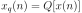
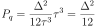
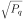
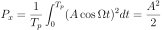
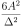

Next: Frequency representation of signals Up: Quantisation of analogue signals Previous: Quantisation of analogue signals Contents
|

|
Fig. 4 shows error produced by the quantiser in the worst case scenario. From that it can be seen that the maximum quantisation error is half the quantisation step:
 (19)
(19)
 the lower the error!
the lower the error!
What is the mean square error ?
 |
 |
 |
(21) |
|
 |
(22) |
 |
(23) |
What is the relative error to a sine wave?
Ratio to signal power to noise:
|  | |
 | (25) |
|
 | (26) |
github / contact